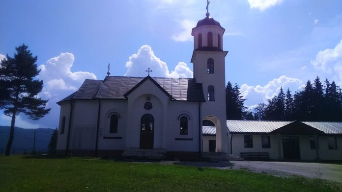
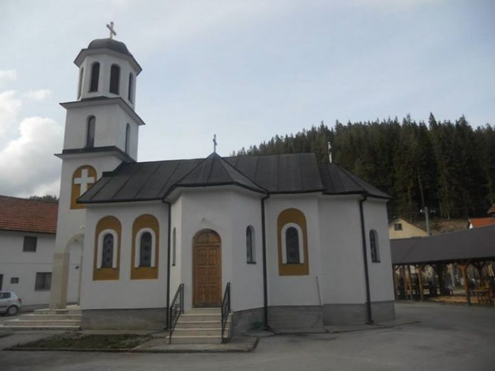
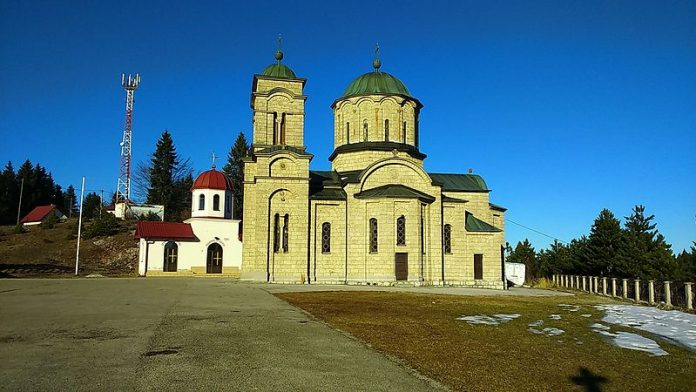
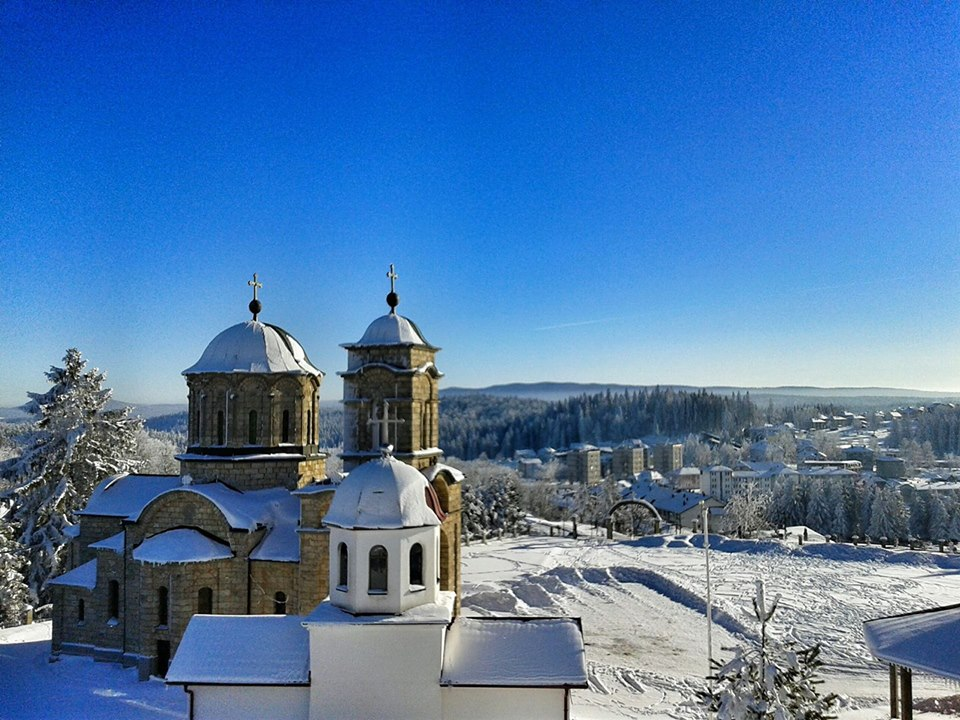

Између Првог и Другог свјетског рата, у селу Џимрије постојала је црква брвнара посвећена Св. цару Константину и царици Јелени.
Обнова и зидање цркве започета је јула 2000. године, а радови су завршени 2002. године. Земљиште за градњу храма даровала је породица Мандић из Хан Пијеска.Цркву је осветио епископ зворничко-тузлански Господин Василије и епископ амерички Господин Лонгин, уочи дана храмовне славе Св. цара Константина и царице Јелене 2. јуна 2002. године. Финансијска средства за градњу храма обезбеђивана су кроз добровољне прилоге вјерног народа. 
Манастир Пјеновац је манастир Српске православне цркве. Налази се у селу Пјеновац, општина Хан-Пијесак.
Манастир у Пјеновцу посвећен је Усјекованију главе светог Јована Крститеља. Грађен је од почетка мјесеца маја 2001. до почетка јуна 2002. године. Градњу су финасирали вјерници и привредни субјекти са простора општине Хан Пијесак и општина широм Републике Српске, као и дијаспоре. Иконостас, иконе и живопис радио је академски сликар Николић Милан из Шапца.
Звоно за цркву поклонио је епископ Лонгин. Недалеко од данашњег манастира постојао је мали манастир, који је падом старе српске државе Босне и доласком Турака срушен. 
Црква Светог великомученика Пантелејмона је храм Српске православне цркве који се налази у Хан Пијеску у Републици Српској.
Припада епархији зворничко-тузланској, сједиште је парохије. Посвећена је Светом Пантелејмону.
Првобитна црква у Хан Пијеску саграђена је 1923. године, а кумовао јој је лично краљ Александар Први Карађорђевић који је често боравио у својој резиденцији у Хан Пијеску.
Овај храм се налазио недалеко од данашњег, у близини споменика и спомен-костурнице пострадалим борцима из Другог свјетског рата.
Стари храм су авионима бомбардовале и порушиле усташе 1942. године. Од некадашњег храма сачувана су само три звона, једно звоно је поклон краља Александра Карађорђевића.
Том приликом је изгорјела и сва архивска грађа.
Градње новог једнобродног храма почела је 1972. године. Темеље новог храма осветио је епископ зворничко-тузлански Лонгин.Храм је зидан сигом,
димензија 17,99 х 12,72 m, а покривен је бакром. Градња цркве је завршена 1979. године.
 